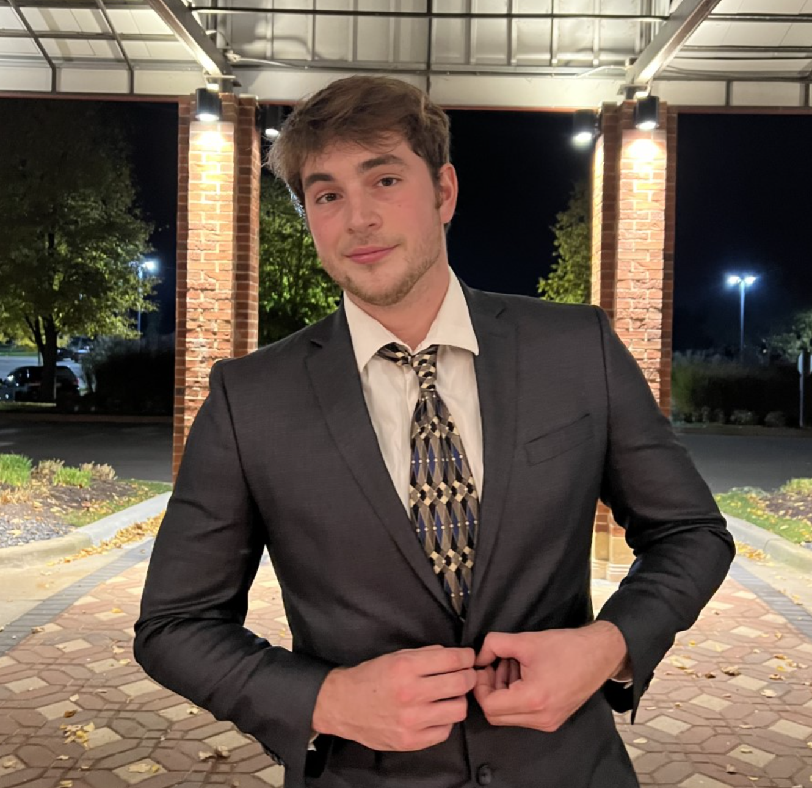

My name is Eric Roach and I am a Senior at Michigan State University studying Games & Interactive Media. I am a Junior CG developer at Elm Park Labs and my passion is making things that help people.

My favorite hobbies are...
1. spending time with my family and friends
2. playing video games
3. playing music
My favorite video game right now is Legend of Zelda: Tears of the Kingdom but my most played game is Brawl Stars. My Brawl Stars knowledge goes as far back as the beta of the game in 2017. Amongst my friends I am reffered to as the wise one and most of my friends come to me to ask for my preferences, advice, and general knowledge about the current state of the game. I have been lucky enough to enjoy a game so much and have been able to learn lots about it as I have continued my studies of Games & Interactive media which has allowed me to gain a deeper understanding of game mechanics, developer methods, and typical game studio practices, which allows me to predict new things coming to Brawl Stars.
If you have any questions. Please refer to my contact page!